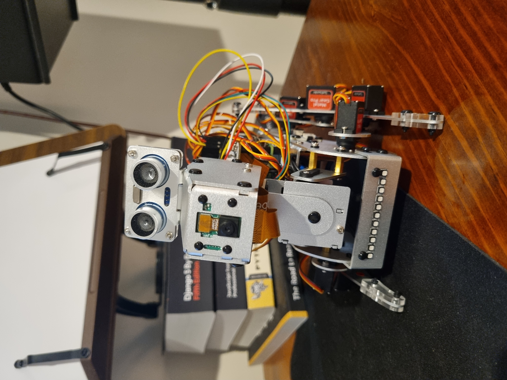

A vocabulary of movement
Building towards a library of poses and sequences for listening, thinking, curiosity and rest. Timing and transitions matter as much as the pose itself.
Puppetry, animatronics and software meet in my exploration of expressive companion robots.
I’m interested in the moments beyond words: the tilt of a head, a pause, a listening pose and the movement that makes a character feel attentive.
My starting point is a simple question: what should this movement communicate?

My current work centres on a SunFounder PiDog, exploring how physical responses can complement a character’s voice and personality.
Building towards a library of poses and sequences for listening, thinking, curiosity and rest. Timing and transitions matter as much as the pose itself.
Exploring how scripted dialogue, and eventually live conversation, could coordinate with expressive physical behaviour. A more characterful animatronic dog is the next ambition.
These are movement ideas I’m exploring for Wolfie’s pose library. Each needs a clear pose, a thoughtful transition and the right timing.
A gentle head tilt, a still body and a pause that leaves room for the person to speak.
A small change in gaze or posture, followed by a pause before the next movement.
Slower transitions and a settled pose, giving the character a quieter rhythm.
Teaching, storytelling and robotics all ask a similar question: how do we communicate clearly, help someone feel understood and make the next response meaningful?